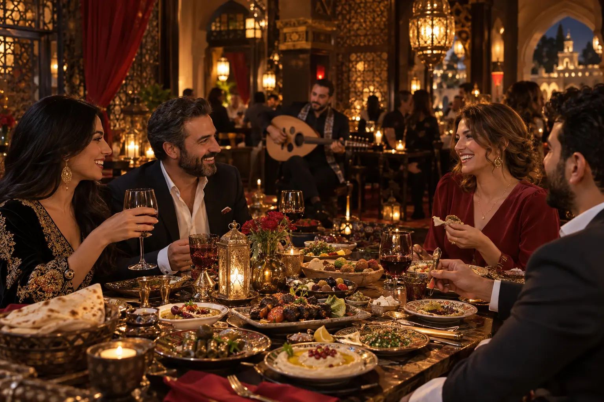
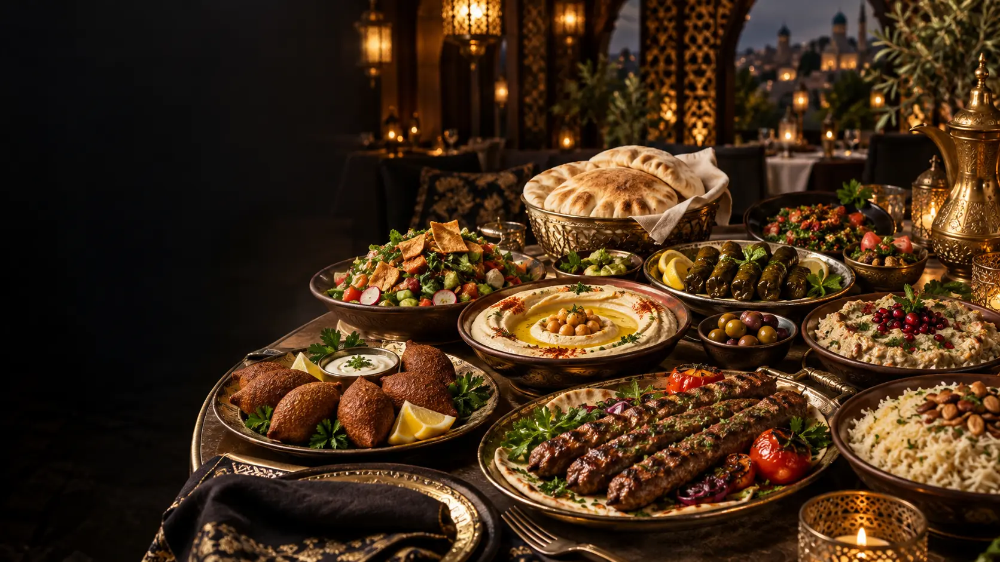
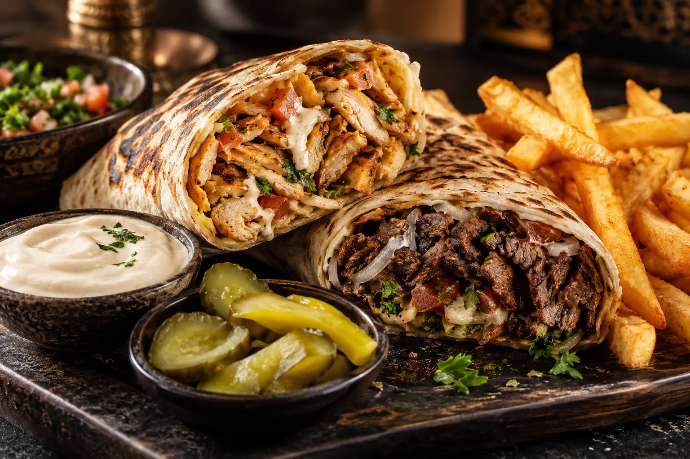
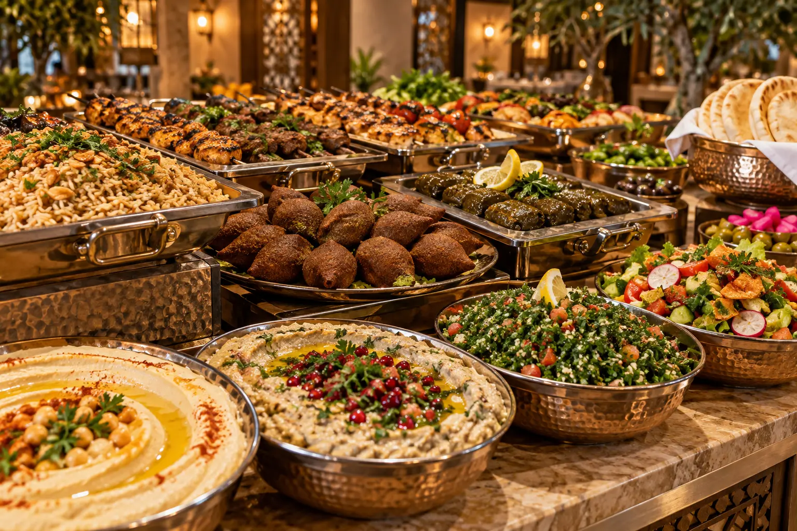
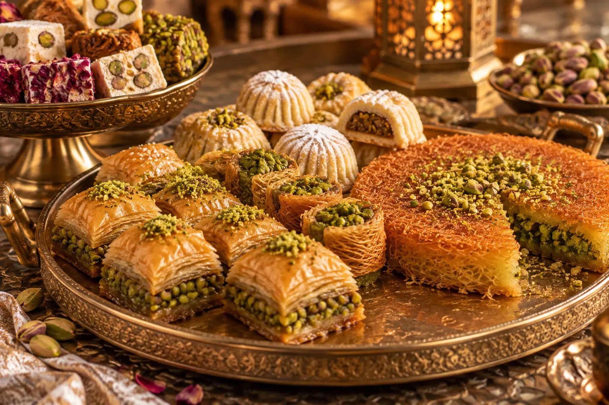

Noite Árabe
Sextas com rodízio árabe completo e dança do ventre.
Sabores autênticos, cultura e experiências preparadas por árabes para você viver muito além de uma refeição.
Veja o destaque de hoje e faça seu pedido diretamente pelo nosso cardápio digital.

Digite seu primeiro nome para descobrir como ele pode ser escrito em árabe. Depois, baixe ou compartilhe sua imagem personalizada.
Cada dia oferece uma forma diferente de viver a cultura e a gastronomia árabe.

Sextas com rodízio árabe completo e dança do ventre.

Domingos com sabores salgados e doces.

Sábados e domingos com variedade e comida árabe de verdade.
Uma mesa completa para compartilhar sabores clássicos da culinária árabe.

Receitas, hospitalidade e experiências que aproximam Ponta Grossa da cultura árabe.
De segunda a sexta no almoço, com sabor árabe e opção diferente a cada dia.
Reservar antecipadamenteRua Augusto Ribas, 294 — Centro
Ponta Grossa — PR
Almoço de segunda a sexta.
Buffet sábado e domingo: 11h30 às 14h30.
Jantar: a partir das 18h.

Histórias, técnicas e receitas tradicionais da cozinha síria explicadas pela equipe do Syriana.
Conhecer as receitasReceba ofertas secretas, convites para eventos e benefícios exclusivos para membros.
Quero entrar para o clube